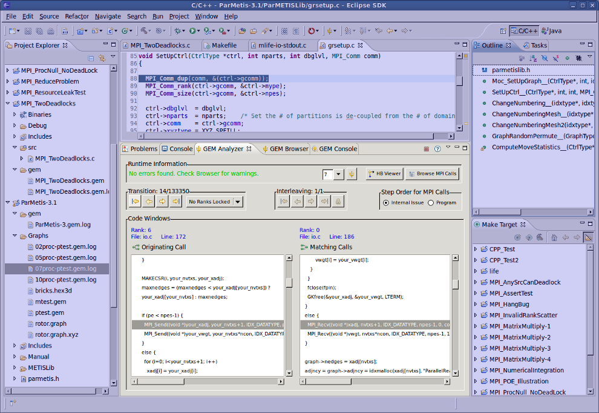

|
|
Analyzer View |
Before formally verifying an MPI C/C++ application, the number of processes needs to be set for the verification run. You will also need to know how to run GEM itself. The links below detail these processes:
When GEM has finished the verification of your MPI C/C++ application, the Console, Browser and Analyzer Views will all be opened and depending on what is specified in the GEM Preference Page, one of these views will be brought to the foreground and given the active focus.
This unique user interface visually displays the output from the log file that was generated at runtime by highlighting lines representing match sets (p2p and collective send-recv matches) in the source file. It shows both the current MPI call, and any matching point-to-point or collective operation. It also allows the user to examine MPI calls for a particular rank with an easy to use Rank Lock feature. In addition, it has a feature to browse calls by rank and by interleaving, as well as launch the Happens Before (HB) Viewer.
The image below shows what the Analyzer View might look like followed by an explanation of its components.
On the far left is a label that explains how the program terminated, whether by a deadlock, assertion violation, or without error. The text is green if the nothing is wrong and red when GEM is reporting a problem.
 The drop down combo-box shows the current number of
processes and lets the user conveniently choose a new value for the next GEM run.
The drop down combo-box shows the current number of
processes and lets the user conveniently choose a new value for the next GEM run.
 This will re-run GEM on the current MPI project. This is
equivalent to choosing "Formally Verify MPI Program" from the toolbar button drop-down and is provided for convenience.
This will re-run GEM on the current MPI project. This is
equivalent to choosing "Formally Verify MPI Program" from the toolbar button drop-down and is provided for convenience.
 This button will launch the
Happens Before (HB) Viewer, a graphical tool
for examining all processes at once and their interactions on a more global level.
This button will launch the
Happens Before (HB) Viewer, a graphical tool
for examining all processes at once and their interactions on a more global level.
Browse MPI Calls
This opens a new window that shows all MPI Calls and groups them first by the rank that issued
them and then by the Interleaving they are found in.
A transition is essentially an abstraction of an MPI call along with information regarding how the call effects the state of the system. The top left section (aptly titled "Transitions") lets the user change which transition is currently being viewed.
The buttons from left to right let the user navigate to the:Just to the right of the transition/interleaving buttons is a drop down menu that lets the user lock a rank. The Lock Rank option also allows the user to only step to the previous and next call of a specific rank, instead of all the ranks If no ranks are locked then the calls will be stepped through in internal issue order or program order (depending on your selection in the Step Order Section).
An interleaving is a schedule of transitions, or in other words a possible ordering of MPI calls issued by the scheduler. The top right section (titled "Interleavings") lets the user change which interleaving is being viewed. Doing this will automatically move to the first transition of the new interleaving. These buttons let the user choose which interleaving is currently being navigated.
The buttons from left to right let the user navigate to the:This is the order in which the Code Windows will display transistions.
The radio buttons from left to right do the following:At the top of this section are two labels that explain the MPI Call(s) currently being viewed. On the left is the originating MPI call and on the right is the explanation of the matching MPI call (for example an MPI Send may match with an MPI Recv and in such a situation the Send will be described on the left and the Recv on the right). Some MPI Calls, such as collective operations do not match with anything (like Barrier or Finalize for example) in this situation the label on the right will be blank or simply list the processes involved with the coolective operation.
These labels have two lines of information. From top to bottom they are: Rank (aka process id), and then the file and line number where the MPI call is found in the source file.
Below these two labels are two windows that both hold complete copies of the source file. These are used to visually show where the calls came from and how they match. In the left window the originating call is highlighted and on the right the matching call is highlighted.
Note: This same functionality can be obtained through the Analyzer View context and pull-down menus.
Back to Top | Back to Table of Contents
School of Computing * 50 S. Central Campus Dr. Rm. 3190 * Salt Lake City, UT
84112 * isp-dev@cs.utah.edu
License